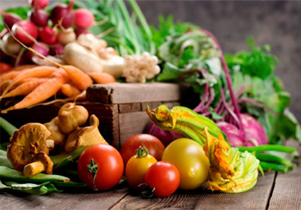
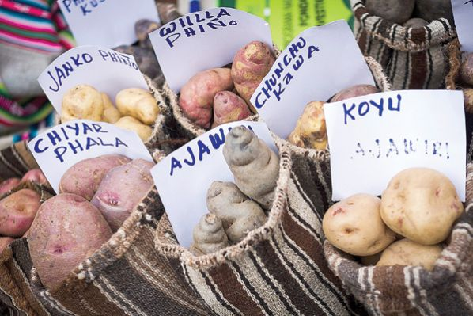
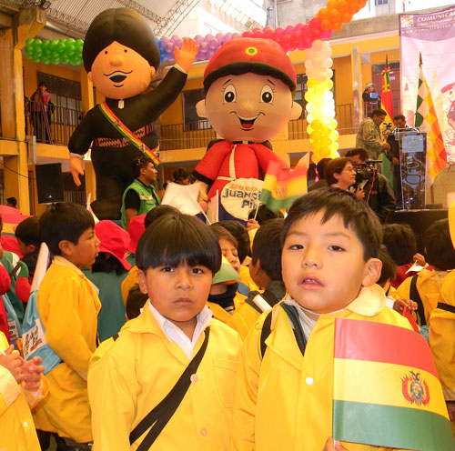
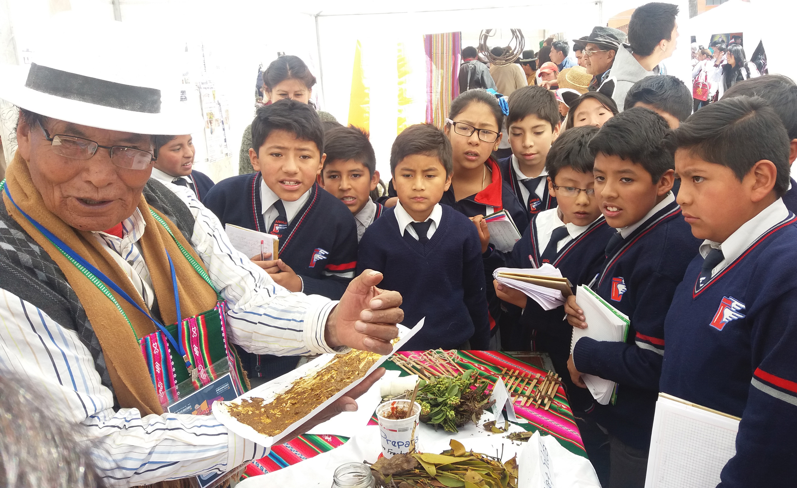

Productores ecológicos promueven alimentación sana
Los sabores y aromas son particulares y su contenido es altamente nutritivo. Estos son solo dos de los cerca de la veintena de alimentos producidos por los comunarios que implementan la agricultura agroecológica.
Las galletas de amaranto, las tablillas de quinua, las granolas con pasas y miel, variedad de refrescos y jugos son algunos de los emprendimientos que los agricultores han incorporados al mercado local y que el martes se exhibían en las oficinas de la fundación Agrecol Andes.
El fin es mejorar la nutrición de las familias beneficiarias de los proyectos encarados por Agrecol Andes, pero también de los consumidores. La mejora en la nutrición integral de las familias es en base a la producción local y la incorporación de hortalizas.

1.600 familias cultivan y venden ecoalimentos
El emprendimiento es llevado adelante por los campesinos del Cono Sur Cochabambino Hace dos años que Zenón Rosales se dedica al cultivo, procesamiento y comercialización de productos orgánicos. Actualmente, es el presidente de la Asociación de Productores Ecológicos de Totora, una de las tres que funcionan en el Cono Sur del departamento que aglutina a cerca de 80 familias agricultoras.
El emprendedor logró incursionar la marca Totoreñita que se vende en el mercado local y se abre espacio en los comercios de Tarija, donde tiene muy buena aceptación. Se trata de cereales, refrescos, tablillas y galletas elaboradas en base a amaranto, trigo, maíz y quinua que mensualmente le genera un ingreso económico promedio de 5 mil bolivianos.
Como Rosales, cerca de 1.600 familias son las que se dedican a la agroecología con el apoyo de la fundación Agrecol Andes a través del proyecto “Desarrollo de la producción Agropecuaria Sostenible como alternativa para la seguridad alimentaria y nutricional de comunidades de valles mesotérmicos de Cochabamba y Santa Cruz”.

Ministro de Educación: Bs 475 millones serán destinados al Bono “Juancito Pinto”
El Ministro de Educación, Roberto Aguilar Gómez, informó que para el pago del Bono “Juancito Pinto” se tiene previsto invertir Bs 475 millones, aproximadamente. Según la principal autoridad educativa del país, la cantidad de estudiantes que este año recibirán el bono es una tarea que se la viene precisando, teniendo en cuenta la cantidad de estudiantes que ingresaron al nivel Primario en la presente gestión.
“El pago del bono se encuentra en fase de preparación”, anunció, cometido para el cual el Consejo Nacional de Política Económica (Conape) realiza los ajustes exigidos.
Con ese mismo propósito, Aguilar Gómez informó que también se coordina con las Fuerzas Armadas en la programación del pago a los estudiantes del Sistema de Educación Regular de unidades educativas fiscales y de convenio de todo el país.

Educación premia a sabias y sabios en “Olimpiadas del Saber del Adulto Mayor”
Demetria Camacho (66) de Cochabamba, en el primer lugar; Olga Warnes (83) de Santa Cruz (segundo lugar) y Benito Germán Salgado (69) de La Paz (tercer lugar) fueron los ganadores de la tercera versión de las “Olimpiadas del Saber del Adulto Mayor” 2016, organizado por el Ministerio de Educación con el objetivo de rescatar y valorar los saberes y conocimientos albergados en personas de la tercera edad a través de la producción de textos y la narración oral.
Los 30 adultos mayores participantes de esta olimpiada provenientes de los nueve departamentos del país participaron en horas de la mañana del “Conversatorio Intergeneracional” en la Plaza del Bicentenario, donde narraron historias de su vivencia y sabiduría ancestral a estudiantes de secundaria, universitarios, estudiantes de las Escuelas Superiores de Formación de Maestros, maestras y maestros, miembros de las Asociaciones del Adulto Mayor, autoridades y la población en general.

Información 
Calle 5B4 No. 38-09 Barrio San Fernando
PBX (2) 489 9918
ervicioalcliente@gestioninstitucional.net contabilidad@gestioninstitucional.net
Social Media
Visita nuestras redes sociales.

Copyrigts 2016 ® www.gestioninstitucional.net - Diseño y Desarrollo: WebTac